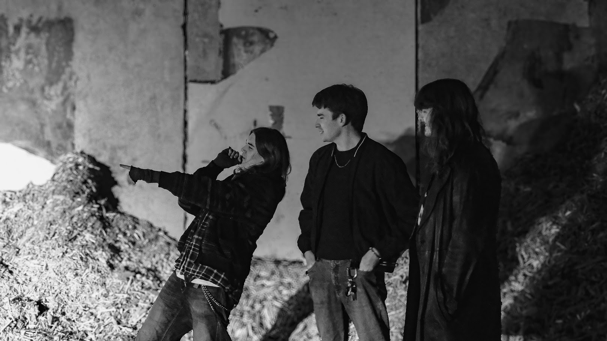

Om oss
Hörselskadad är ett punk/altrock band från Lycksele. Deras sound är inte riktigt definierat tack
vare deras unika sound och banbrytande variation i genrer.
Även fast de är ett ganska nytt band så har deras musik nått ut till många tack vare deras EP
och många spelningar runtom i norr och västerbotten.
Under 2026 arbetar bandet hårt med deras kommande debutalbum.
Hörselskadad är:
Leon Strindberg: Gitarr/sång
Almer Alenius: Bass VI
Fabian Einarsson: Trummor, körsång
